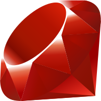

Introduction
Research laboratories need a professional and up-to-date website to showcase their work, attract collaborators, and establish a strong online presence, but developing and maintaining such a website can be challenging and time consuming. We present Lab Website Template, an open-source tool designed for the unique needs of labs. It automates citation generation, repo configuration, and anything else it can, allowing labs to focus more on research and less on web development and grunt work.
Approach
We spent significant time in pre-release (< v1.0) where we gathered observations and direct feedback that shaped our approach. Some things we noticed:
- The most common pain points were about the same things same things, like repo setup and configuring key options.
- Labs can't waste time on basic tasks or low-level details, but still need a way to customize things when necessary.
- Users want to see that software is actively maintained, greatly comforted and sold by good support.
Some philosophies we adopted to address these needs:
- Doing is better than instructing. Exhaustive experimentation with GitHub Actions and scripting showed we could automate much more setup/config/etc. than we thought.
- Don't let issues languish. We respond quickly and discuss pros/cons of suggestions to make users feel heard, even if actual resolution takes longer.
- Keep it simple and focused. We diligently consider all feedback, but also don't accept every suggestion at face value to avoid feature/config bloat (inner-platform effect).
- Documentation is essential. Code/comments are not enough. We invested in writing a full GitBook suite with examples, guides, diagrams, search, etc., which lets users help themselves for common issues and saves us time in the long run.
- Cleanly structure content. We separate "under-the-hood content" from "user content" so users can focus on just what's important.
We feel our approach benefited our tool and could benefit other research software as well.
Tech Stack
 We use the veteran static-site generator Jekyll. We target the GitHub platform, using Pages for hosting and Actions for automation. Users write content in Markdown and Liquid syntax. The cite process uses Python for researchers to modify more easily. For users who like to run things locally, a Docker container provides cross-platform consistency and single installation.
Citations
orcid.yaml
- orcid: 0000-1111-2222-3333
User inputs their "meta-sources" as a simple list of IDs.
We automatically "expand" these into full lists of sources from ORCID, Google Scholar, or PubMed. Power users can write plugins to support others.
sources.yaml
- id: doi:12345
image: thumbnail.jpg
tags: biology, data
User inputs their "manual", hand-picked sources as simple IDs (2,000+ types supported), along with additional rich details like images, tags, buttons, and more.
We use Manubot to generate full citations details – title, authors, date, publisher, etc. – for all sources.
research.md
{%
include list.html
data="citations"
filter="category == 'featured'"
%}
User includes citations in their site wherever/however they like with the list component, which can filter data with any Ruby expression (more flexible and readable than Liquid syntax).
Setup/Previews/Deployment/Etc.
Outcome
The success of this approach is evidenced by the template's widespread adoption, with considerable activity on GitHub and a growing gallery of active labs using it.
The template has likely saved a great deal of time and money for research labs and other groups. This work reflects not just a powerful tool, but an evolving community resource that effectively meets the needs of its users.
The next evolution of this template will seek to offer even more convenience, simplicity, robustness, and flexibility. We will need to build it with a more modern and maintained site generator with type safety, as we have already stretched the limits of what is possible in Jekyll. We will aim to make upgrading a user's template version an automatic process, and make citations even more seamless to include.